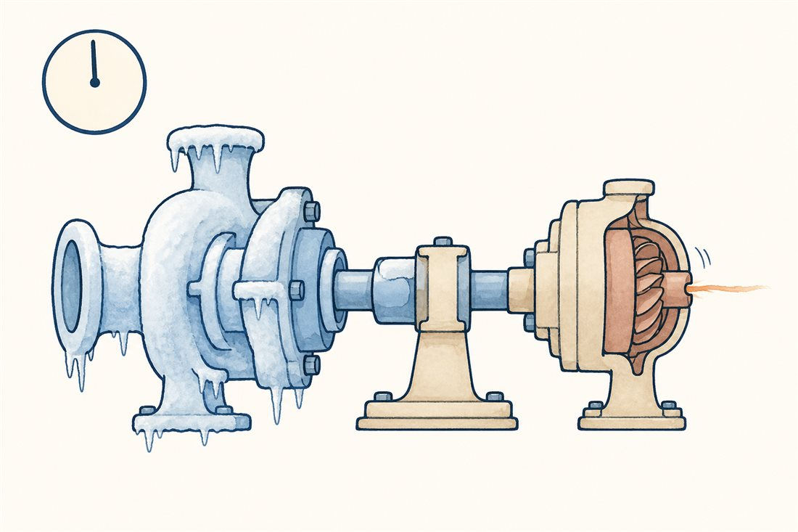
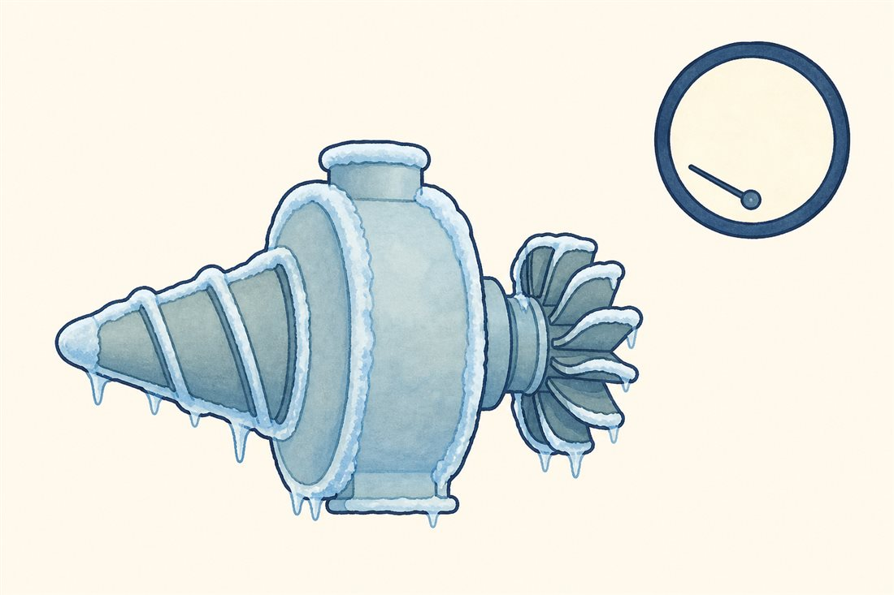
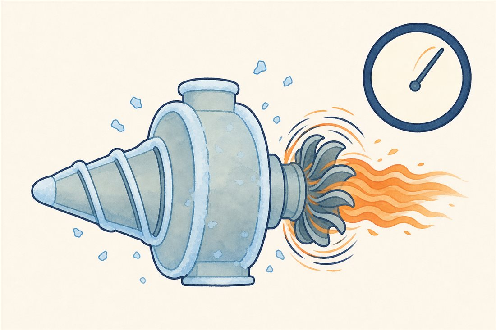
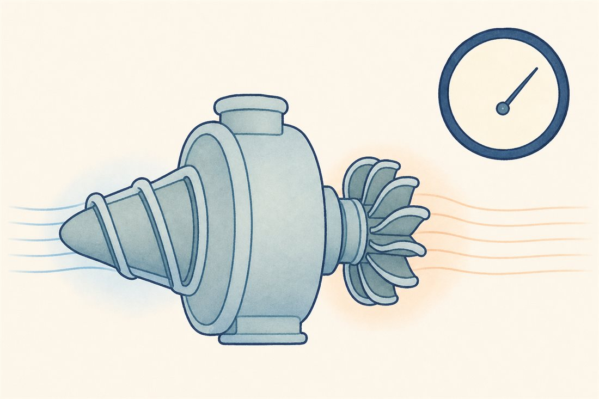

めざめの3秒
ここまでの話はぜんぶ、「定常運転」という平和な国の話でした。でもポンプの一生でいちばん危険なのは、目覚めの数秒間です。静止から数万回転へ、常温から-253℃へ、真空から数十MPaへ——すべての量が同時に駆け上がる過渡の時間。定常設計の言葉が通じないこの数秒のために、エンジンには長い長い「起床の儀式」があります。

目覚めの物語を、3幕で切り替えてみてください。



よりみち打上げの何十分も前から、儀式は始まっている
常温の金属ポンプに-253℃の液体水素をいきなり流すと、液は触れたそばから沸騰してガスになり、ポンプは気体を掴んで空回りします（そして第2話の泡の悪夢が始まる）。だから本番のずっと前から、推進剤を少しずつ流して機械ごと極低温に漬け込む——チルダウン（予冷）です。RL10ではエンジン予冷が打上げの約90分前から始まり、SLSでもRS-25のポンプを冷やすブリード運転が発射前の重要な儀式として組まれています。派手な点火の裏に、静かで長い準備がある——ロケットの朝は、じつはとても早いのです。
よりみちニワトリとタマゴを、どう始めるか
始動には論理パズルがあります——ポンプを回すガスは、ポンプが送った推進剤から作られる。ニワトリとタマゴです。答えは機種ごとの流儀で、ヘリウムなどでタービンに最初のトルクを与えるスピン始動と、タンク圧で初期流量を成立させ、そこで得た加熱水素や燃焼ガスで自らを加速していくタンクヘッド始動——外部のスピン源に頼らない立ち上がりを自己始動（ブートストラップ）と呼びます。日本のLE-5系は冷却流路で気化した水素による自己始動の実績を築き、その系譜はLE-9へ——ガス発生器を持たないエキスパンダーブリードは「専用の焚き火を先に熾す」工程そのものがなく、始動の物語がシンプルになります（LE-9の始動方式の詳細は公開資料では明言されていないので、ここでは系譜だけ）。どの流儀でも、立ち上がり中の数秒は圧縮機で言うサージ余裕ならぬストール・キャビテーション余裕との綱渡りです。
 流体屋のためのノート
流体屋のためのノート
過渡解析の主戦場です。チルダウン中は流路のあちこちで二相流（膜沸騰からの遷移、間欠的なガス栓）、始動中は回転数・流量・圧力が性能マップの「地図の外」を斜めに横切る。系のスケールではPOGO（第1巻08話・NASA SP-8055）——機体の縦構造モード、供給配管の慣性と柔軟性、ポンプ入口のキャビテーションコンプライアンス（第2話）、燃焼・推力応答が閉ループで結合する低周波不安定で、始動過渡に限らず飛行中の定常燃焼区間も評価対象です。実務の道具は、集中定数の系シミュレーション＋要素試験のマップ外挿＋実機ホットファイアの計測——きれいなCFDだけでは閉じない、泥臭くて面白い領域。熱衝撃で隙間が動く（第5話の嵌め合いの話）のもこの数秒なので、構造屋との共同戦線になります。次話は、こうした振る舞いをどうやって「作って、確かめる」かの話。
{kind=link}
・チルダウン: NASA "Engineers Chill SLS Engines"（RS-25ブリード予冷）／RL10予冷 約T-90分: NASA TM-107318
・LE-5系の自己始動の系譜: DLR EUCASS 2017-370（JAXA引用）
・POGO: NASA SP-8055／二相流チルダウン: NASA極低温文献